В 66 уникальных сценах показаны все 9 щитов в руке и за спиной. Сравниваются свита и кольчуга, 4 телосложения и 3 состояния плаща. Полный рост — PNG 320 × 752. Карточки 32 × 32 получены из отдельного результата card редактора. Нажмите на фигуру, чтобы открыть оригинал.
В каждой паре щит показан в руке слева и за спиной справа. Все персонажи имеют среднее телосложение и одинаковый seed.
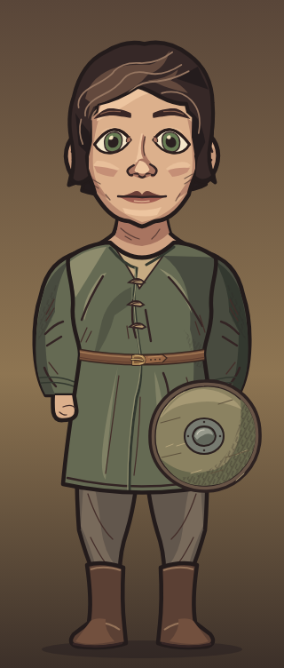
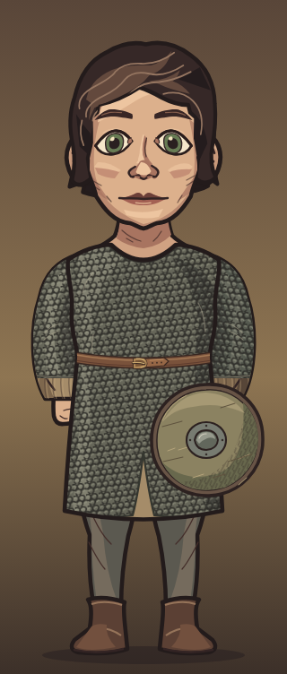
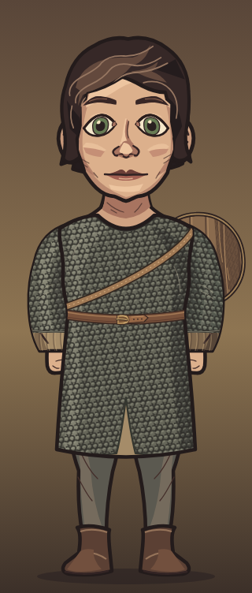
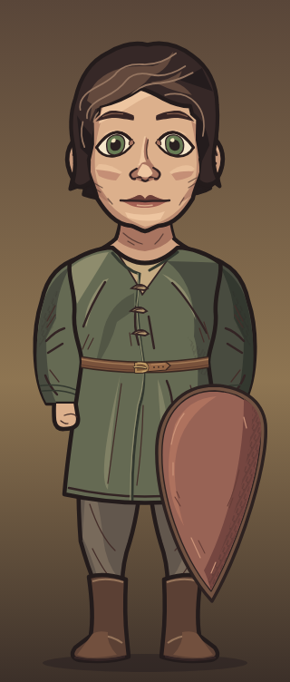
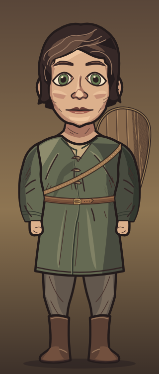
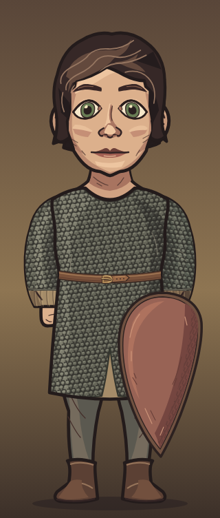
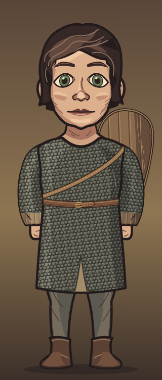
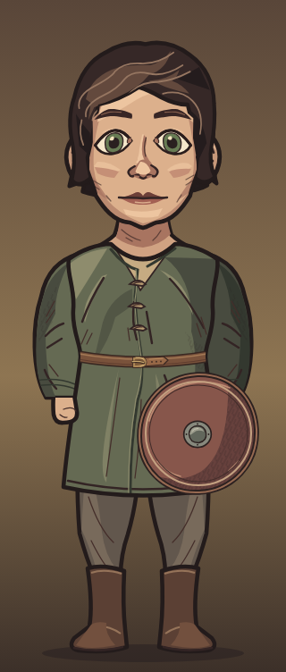
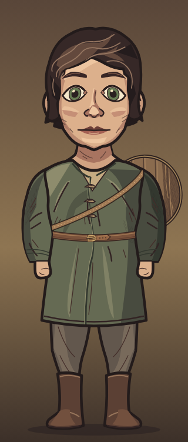
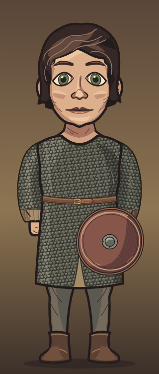
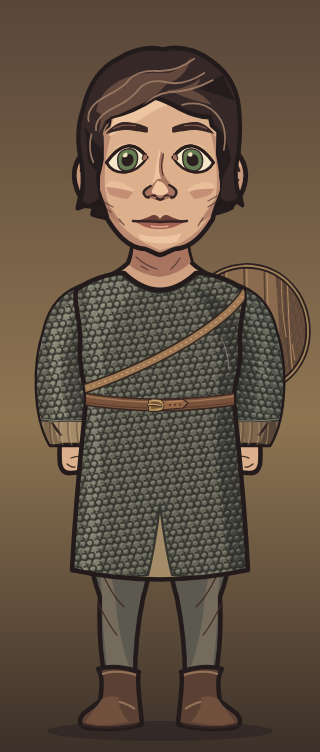
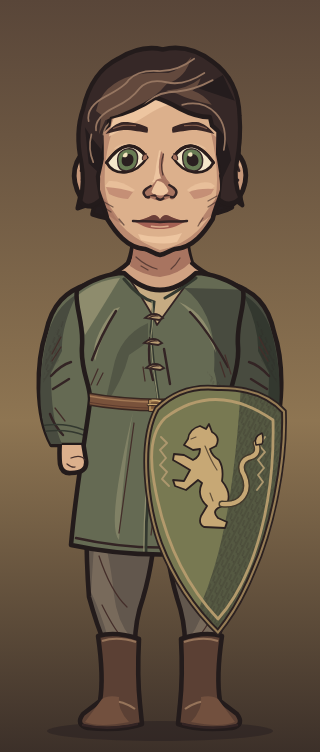
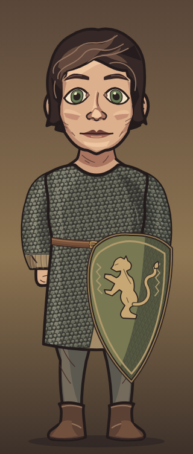
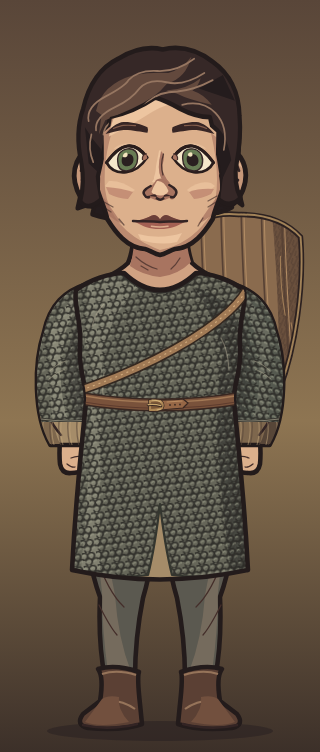
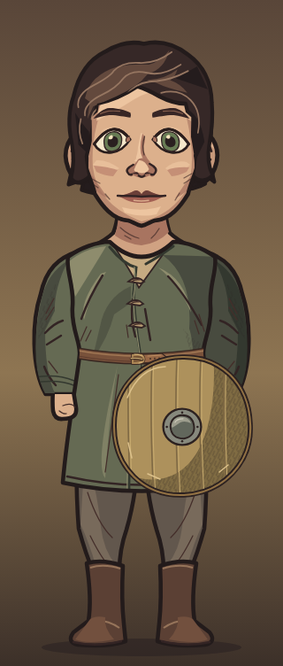
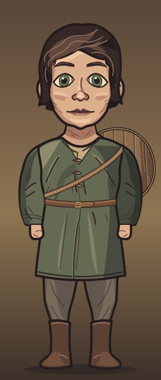
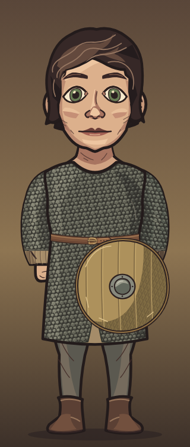
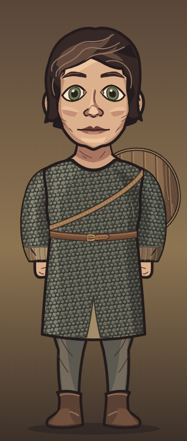
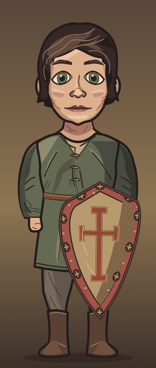
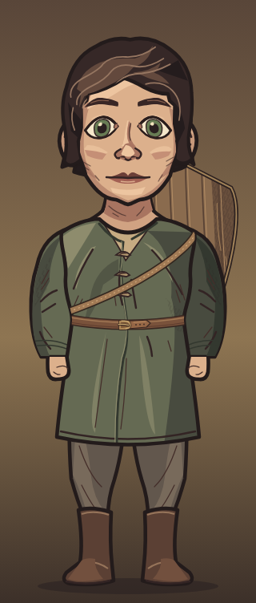
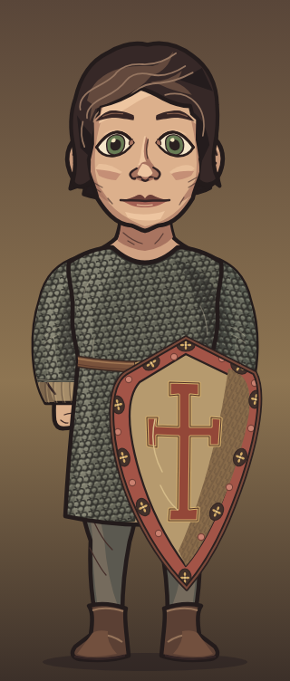
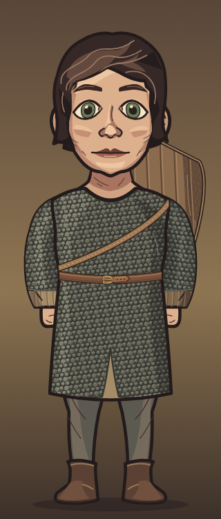
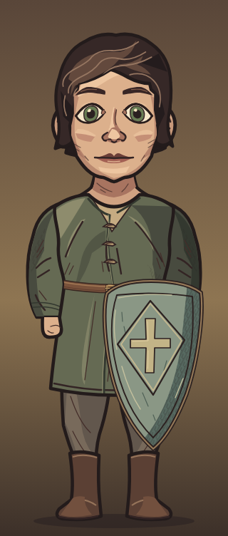
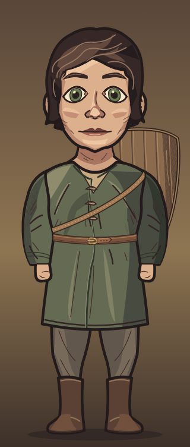
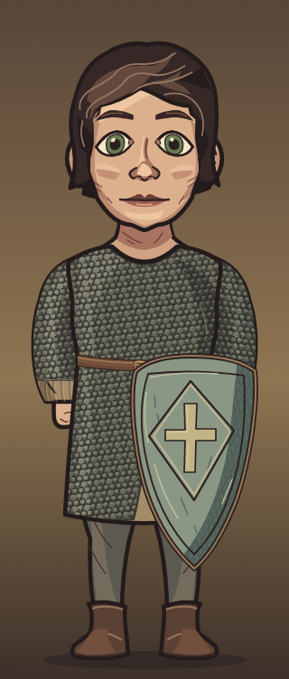
Персонажи в кольчуге показаны с круглым, каплевидным и треугольным щитом.
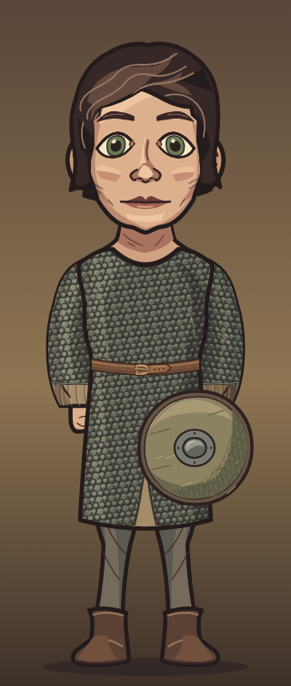
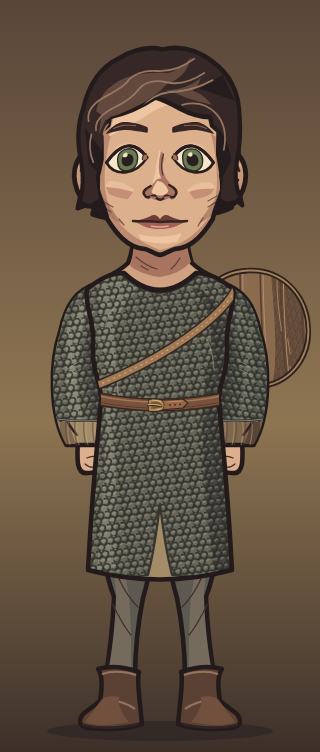
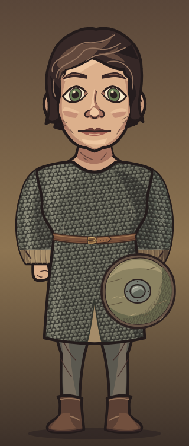
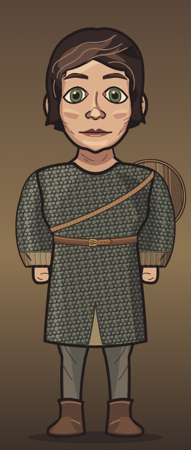
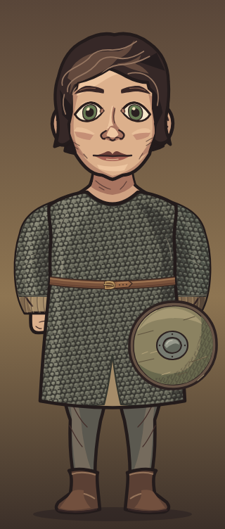
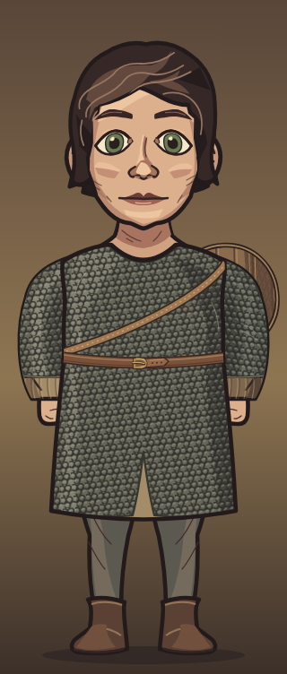
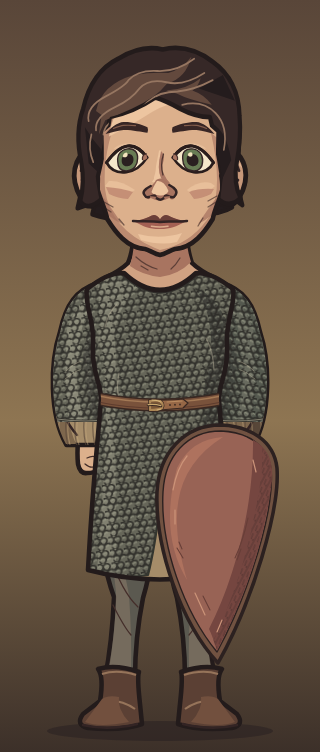
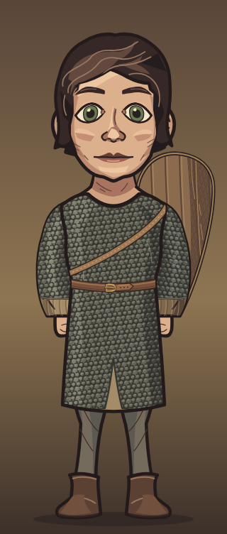
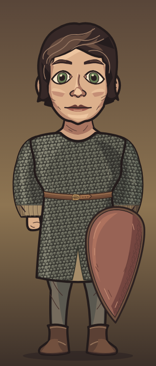
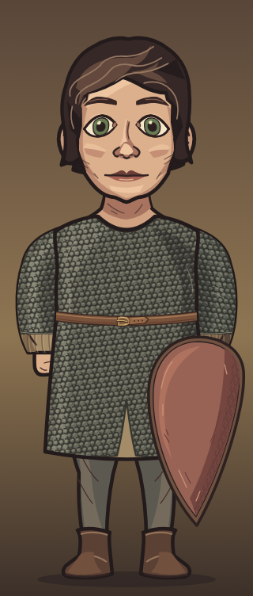
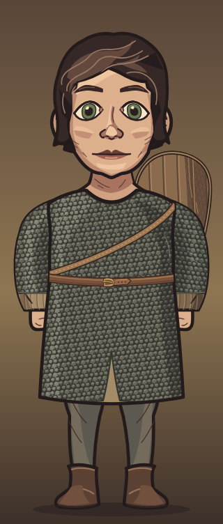
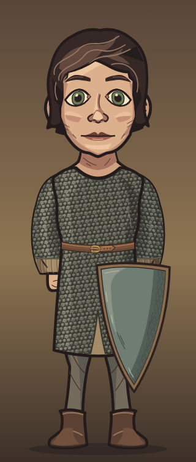
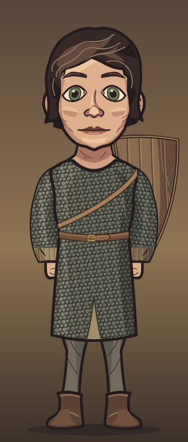
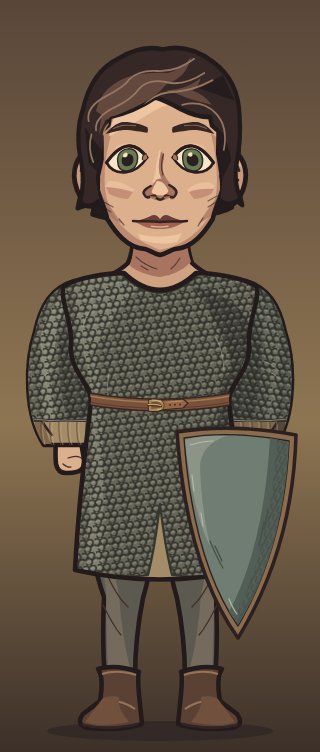
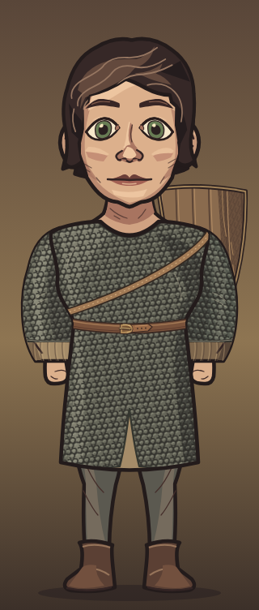
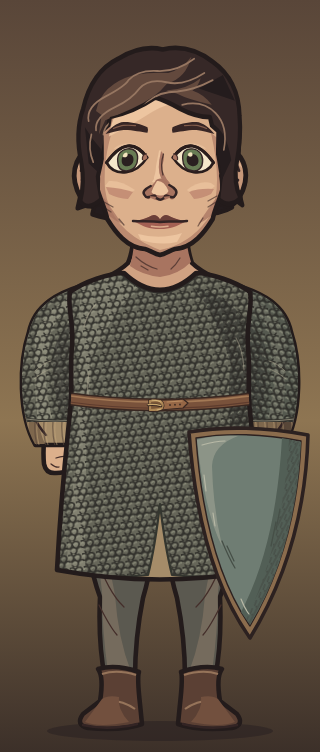
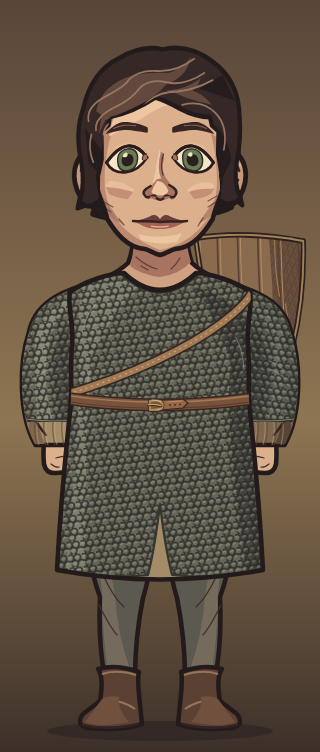
В каждом ряду совпадают seed, лицо, телосложение, одежда, щит и его положение. Меняется только плащ.